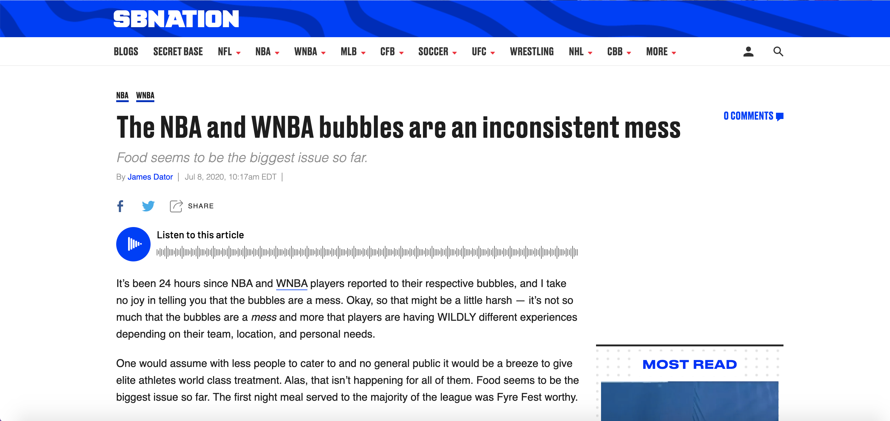

On tbis webpage I will speak on the topic of sexism within THE WNBA vs the NBA. There's a lot off issues from the woman getting payed millions less to not even getting a gym forreal.
Below I will show the main salary of woman vs men as well as a video discussing sexism within the two. As you can see from the image it is a huge difference and is sad forreal because woman deserve just ass much money ass the men and work just as hard or even more hard because we are often seen as a joke within sports. The fact that it is pretty normal is what makes it 100x more sad because people saw no issue with it until light was shed upon it the past COUPLE years. With so much going on people still font take this issue seriously when this is a really big issue.
So in the video on top you cn watch to see problems within the WNBA aswell as if you press the image it sends you to a website that touches on the fact of the issues that go on within this profession that no one talks about and needs to be changed.
The last issue I want to breafly touch on is how the WNBA barely got any food and a small little corner to warm up in while of course the NBA had a full meal basically 5 course with a nicely equipped workout room. Some may say that is not an issue but it is trueky sad and the fact that they did that and didn't see a problem is what takes me out because why did they ever think that was ok.
PRESS IMAGE
If you read that you will see a big issue and with that I rest my case. With only a few pictures you are able to there is a bigger issue than we think. It is very sad because I see people say "well the WNBA isn't even entertaining" when its only said because it is woman playing a "man" sport. It really make me mad because that is peoples arguement as to why they are payed are an absurd amount less and often looked down upon. This is 2021 and it is so sad we have to be fighting for basic rights as woman. On the next webpage I will show solutions for both the reacism as well as sexism issues within the WNBA/NBA.